Om hemsidan för Human Computer Interaction
Denna hemsida innehåller 5 epoker och en avslutande del.
Ingen interaktion, Kommandostyrd interaktion, Tillkomst av datorteknik, Touchstyrd interaktion, Multimodalinteraktion
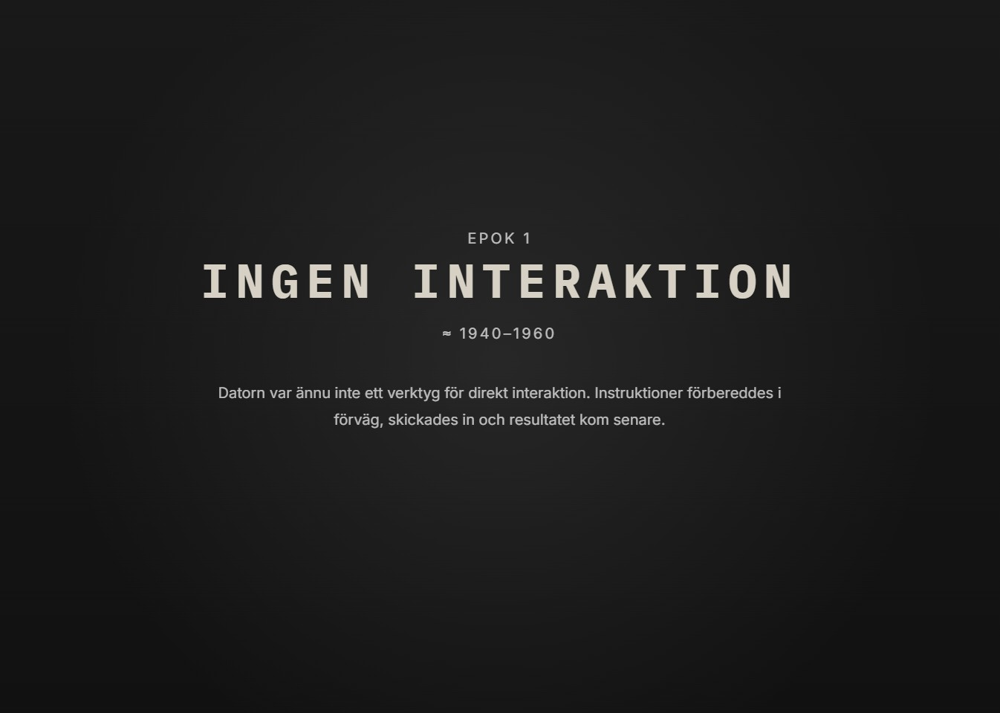
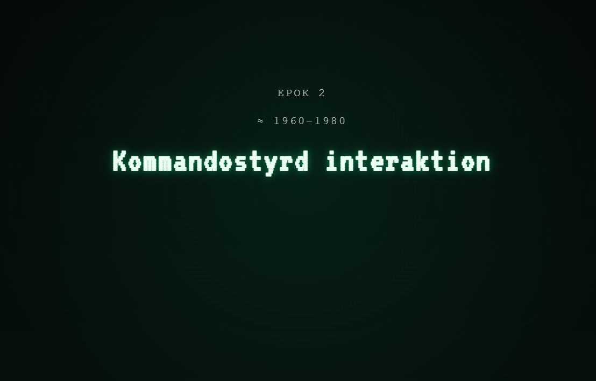
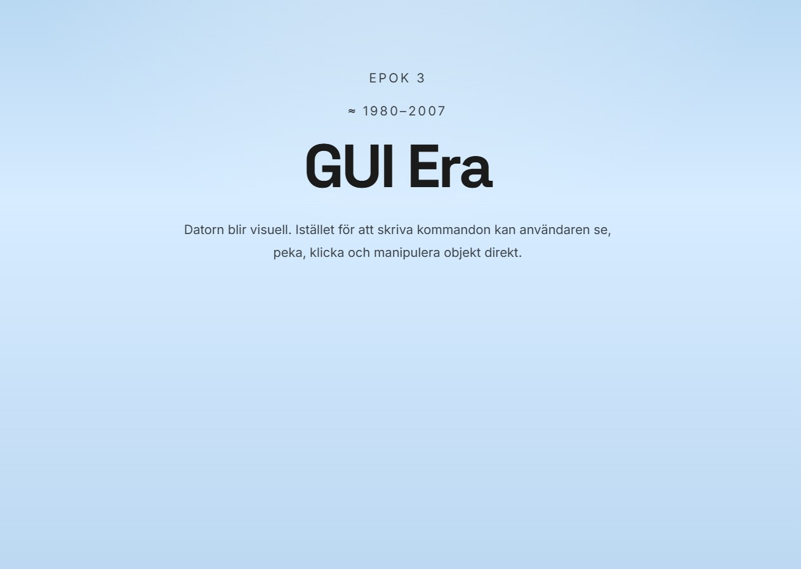
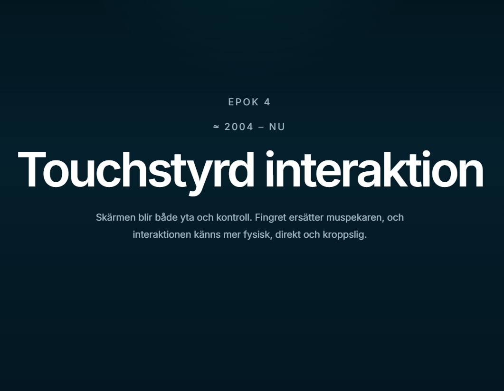
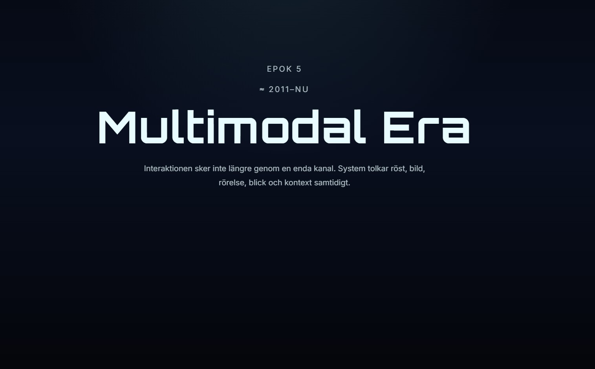
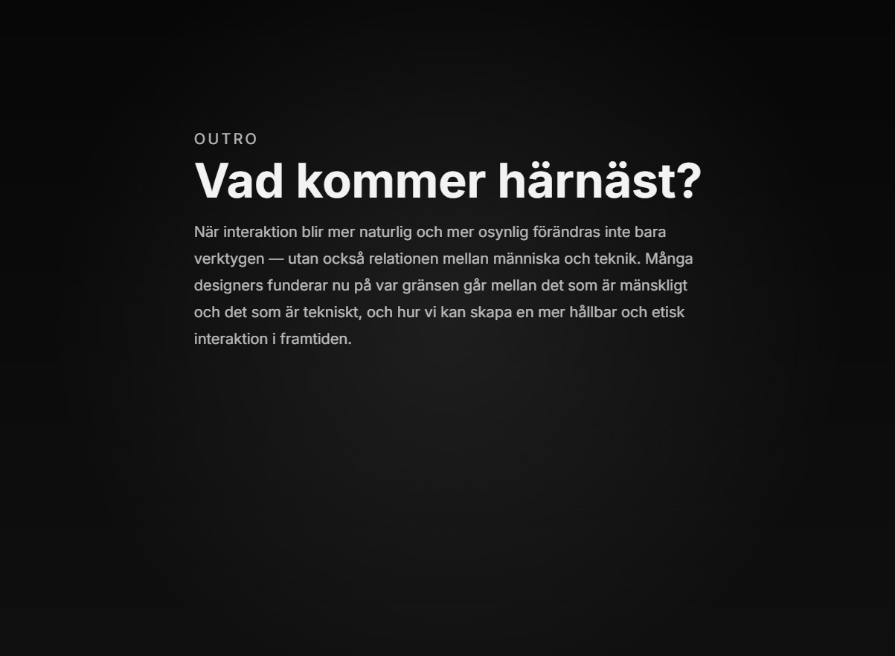
Designkoncept
Människa - teknik = en ömsesidig relation
- Research och analys: omvärldsbevakning, charetter, utforskning genom design
- Problemområde: Människor saknar kunskap om människa-datorinteraktion och hur den har utvecklats över tid.
- Idégenerering: skisser, test av koncept, prototyper med hjälp av ChatGPT
- Kodning skedde med hjälp av ChatGPT där information om hur designen skulle vara matades in och översattes till kod
- Användbarhetsprototypande: prototyperna testades med två användare och itererades kontinuerligt.
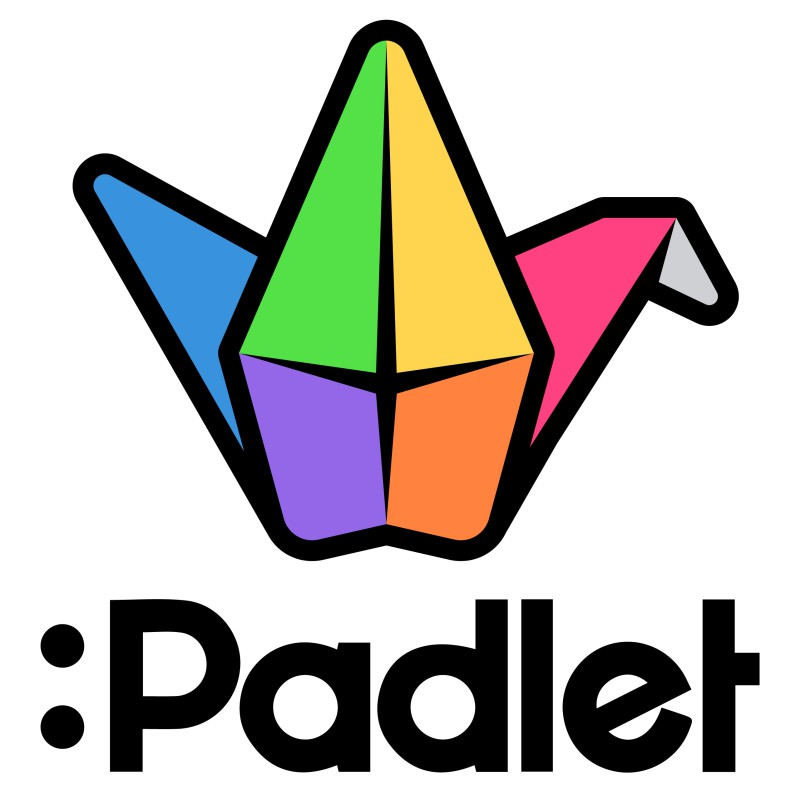
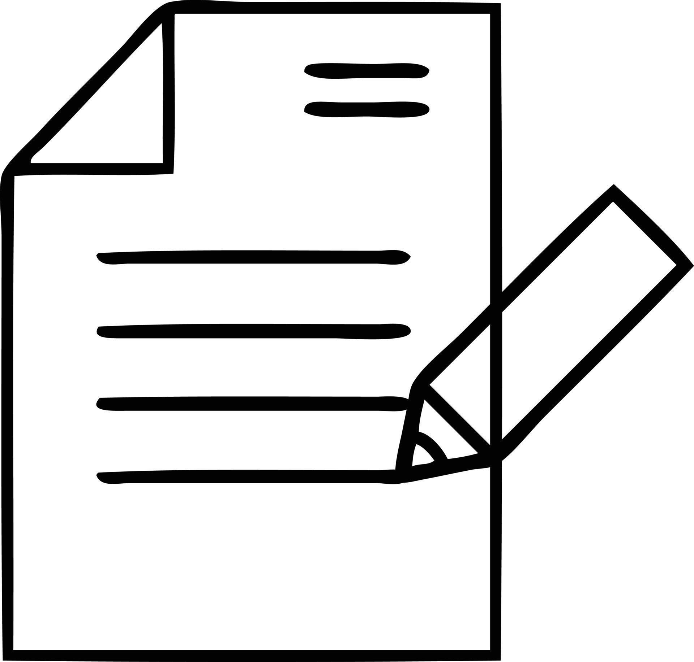
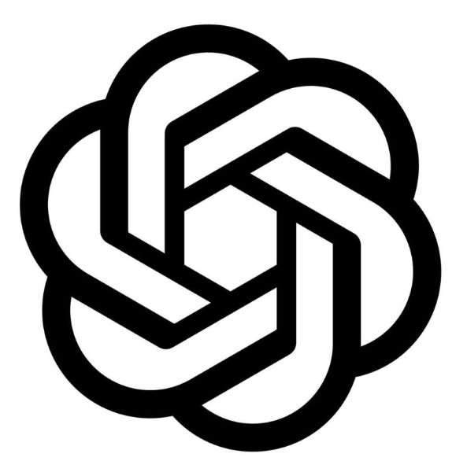
Arbetsprocess
I detta projekt utgick jag inte från en färdig problemställning, utan från ett material- och gestaltningsdrivet utforskande av en hemsida kodad med Github Pages. Mitt initiala mål var att förstå vilka uttryck och interaktionsmöjligheter som kunde uppstå vid interaktion med prototypen.
Projektet började med omvärldsanalysen där det kartlades vilka befintliga lösnignar fanns inom Digital Design. Under Charetter fick jag tips om att spana in scrollytelling som en möjlig lösning på problemområdet. Jag hittade många exempel som var inspirerande och som jag utgått ifrån i min designprocess.
Jag fastställde under vilken tidsperiod jag skulle skriva om HCI: ca 1940-nu. Därefter började jag skissa på hur hemsidan kan se ut och vilka artefakter som skulle vara relevanta för varje tidsperiod. Jag sökte efter "första dator", "första grafiska gränssnittet", "första webbläsaren" osv. för att hitta artefakter som var av betydelse för utvecklingen av HCI.
Efter att ha valt ut artefakter började jag koda hemsidan. Jag matade in information om designen och funktionerna jag ville ha och bad ChatGPT att översätta det till kod.
Det användartestades med två testpersoner med hjälp av användartester och think-aloud metoder.
Prototypen itererades kontinuerligt baserat på feedbacken från användartesterna och mina egna reflektioner kring designen och funktionerna. Jag testade olika hastigheter på autoscrollen, olika ljudeffekter och olika sätt att presentera artefakterna på.
Slutliga prototypen finns på Github Pages (länk längst ner)

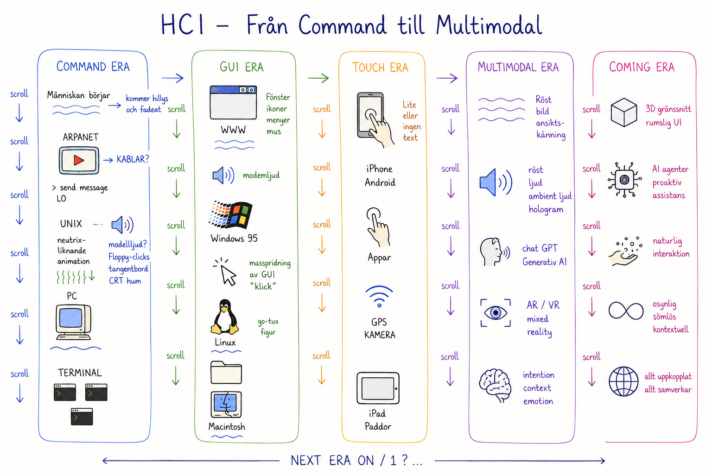
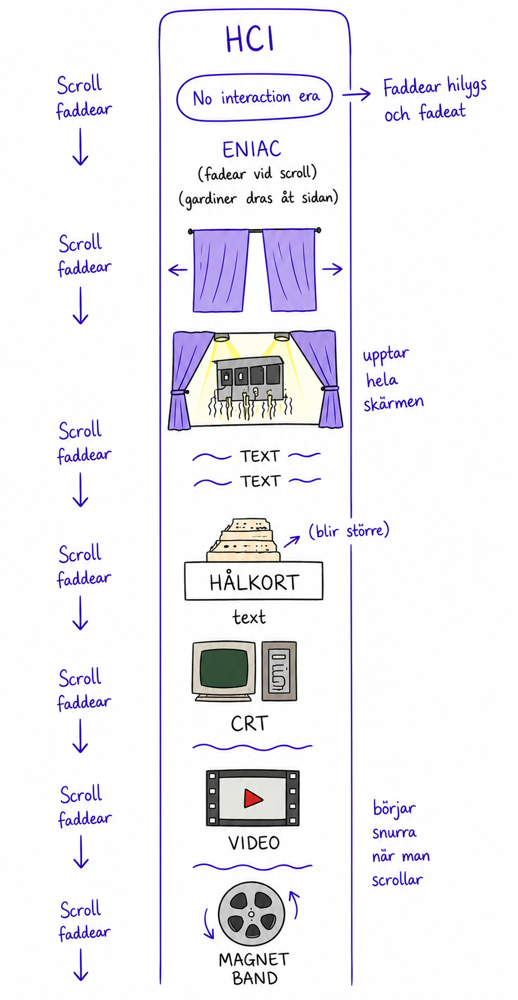
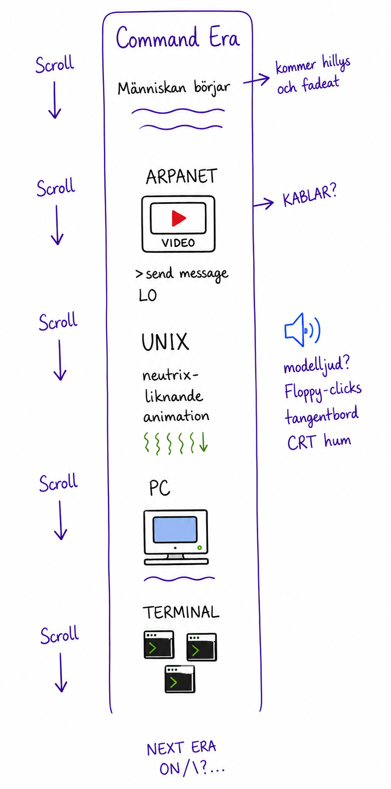
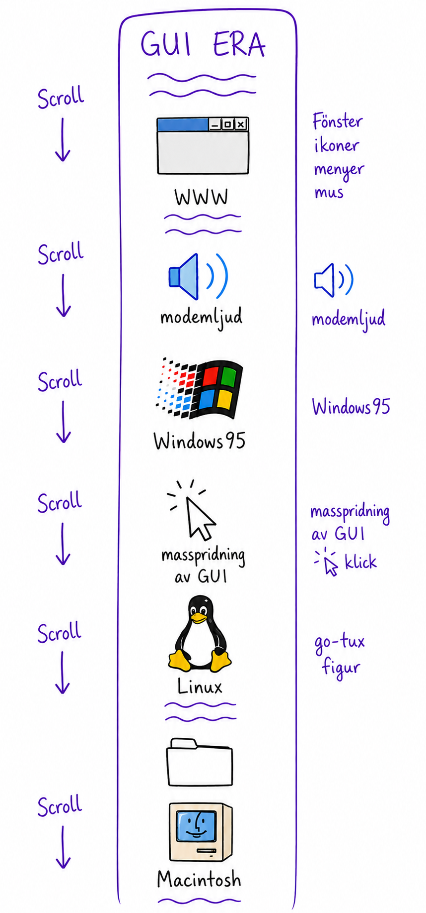
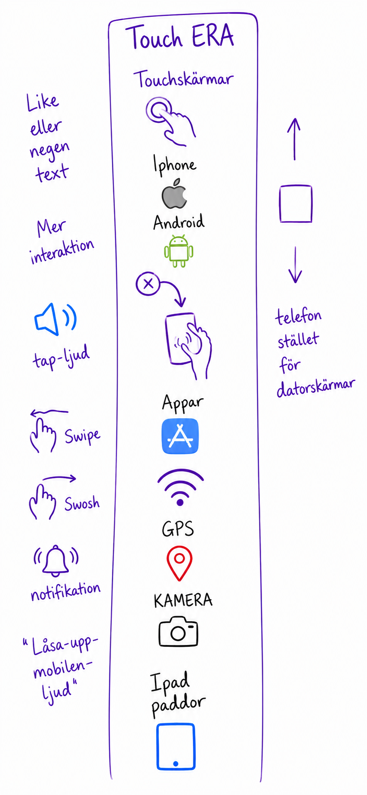
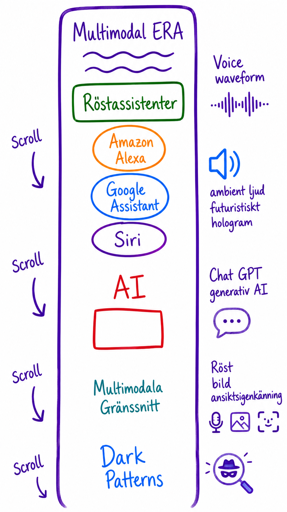
Designbidrag
Detta projekt har fokuserat på att utforska hur engagemang och förståelse för Människa-dator interaktion kan nås genom anvädning av en scrollytelling-hemsida som är uppdelad i 5 epoker.
Varje epok har en unik design och interaktionsstil som speglar den tidens teknologiska utveckling och användarupplevelse.
Genom användning av olika visuella element, ljud och interaktiva funktioner har en informativ upplevelse skapats för användaren.
Primära områden som har legat i fokus är: Autoscroll och Ljudeffekter
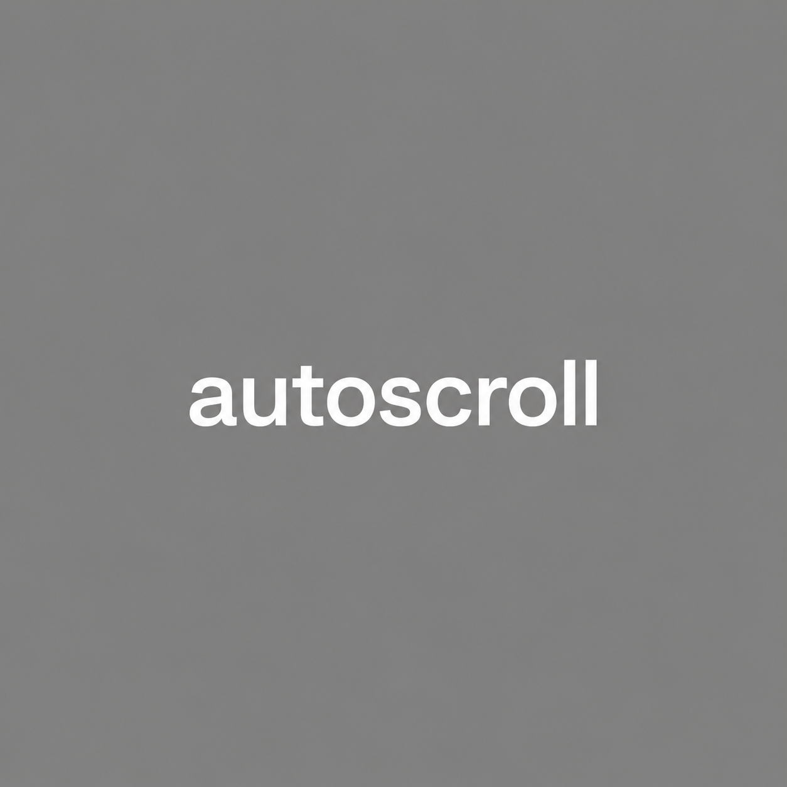
Kunskapsbidrag
Autoscroll har användartestats med 2 stycken användare och itererats baserat på deras input.
Det har varit en viktig del av projektet eftersom användaren uppfattade hemsidan olika beroende på hur autoscrollen fungerade. Det har varit en utmaning att hitta rätt hastighet och timing
Ljudeffekter har också varit en viktig del av projektet. Genom att använda ljudeffekter som är relevanta för varje epok tillsammans med inspelad berättelse har användaren kunnat luta sig tillbaka och njuta av upplevelsen.
Scrollytelling hemsidan för HCI fungerar som en interaktiv berättelse av några artefakter som har varit grundläggande under olika epoker fram till idag. Projektet visar därmed att en scrollytelling hemsida kan vara ett effektivt sätt att engagera användare och förmedla information på ett underhållande sätt.
Till brister hör att det är få artefakter som presenteras då varje epok har avgränsats till maximalt fyra artefakter vardera. Dessa har på ett eller annat sätt varit av betydelse för utvecklingen av människa-dator interaktion.
Resultat:
- Scrollytelling hemsida med fokus på Human Computer Interaction
- Den är uppdelad i 5 epoker som berör olika faser av interaktionsutvecklingen
- Autoscroll finns att använda för att automatiskt bläddra genom sidan
- Ljudeffekter förstärker användarupplevelsen
- Är du redo att utforska genomgången av de basala artefakter inom Human-Computer Interaction?